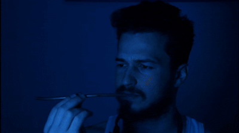

The film follows an eccentric young man who locks himself in his room, determined to build his own time machine.
The project combines narrative storytelling with a playful instructional format, using editing, visuals, and sound to bring his obsessive process to life.
Structured like a step-by-step guide, the story follows his process from early experiments and failed attempts to the final construction and activation of the machine.
Bezalel Academy of Arts and Design